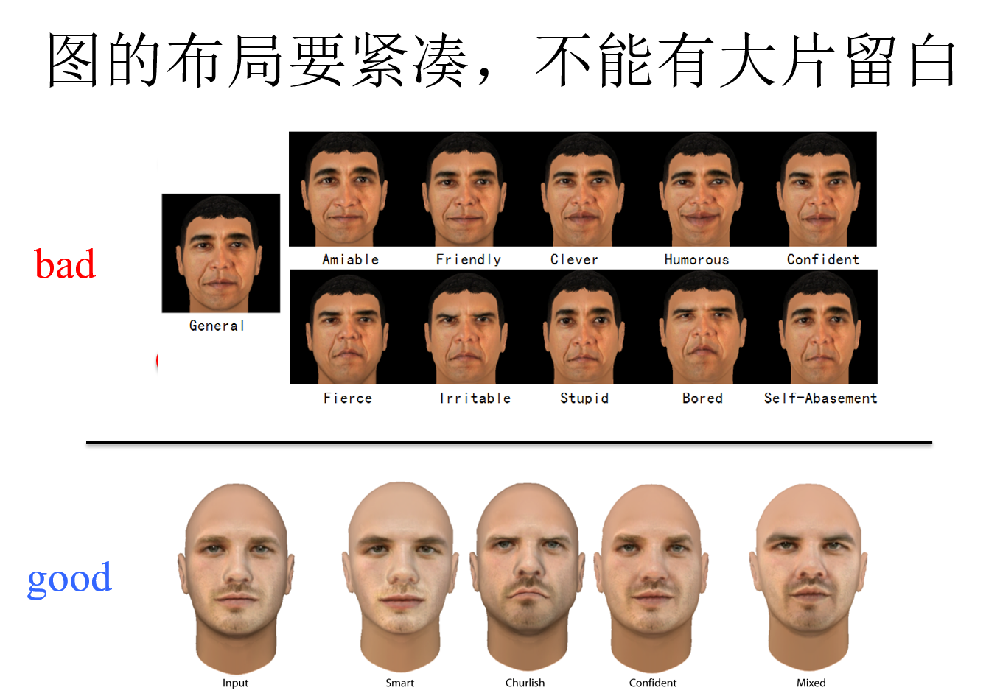
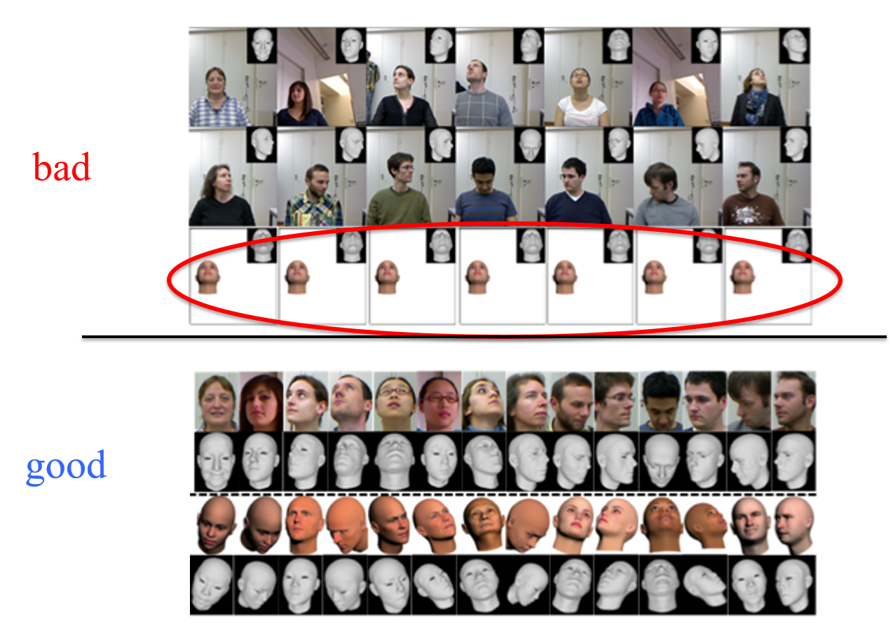
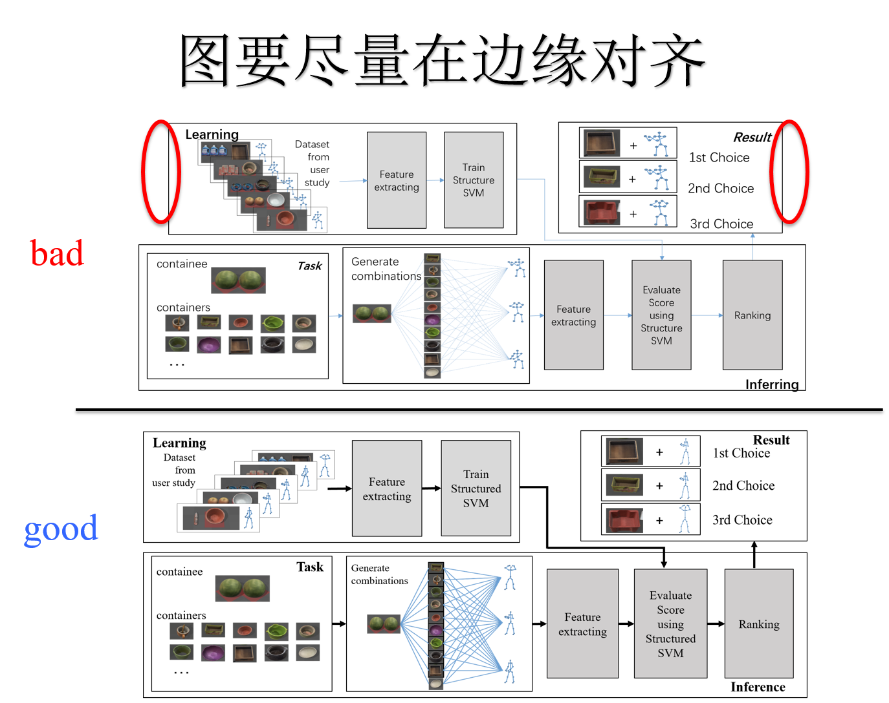
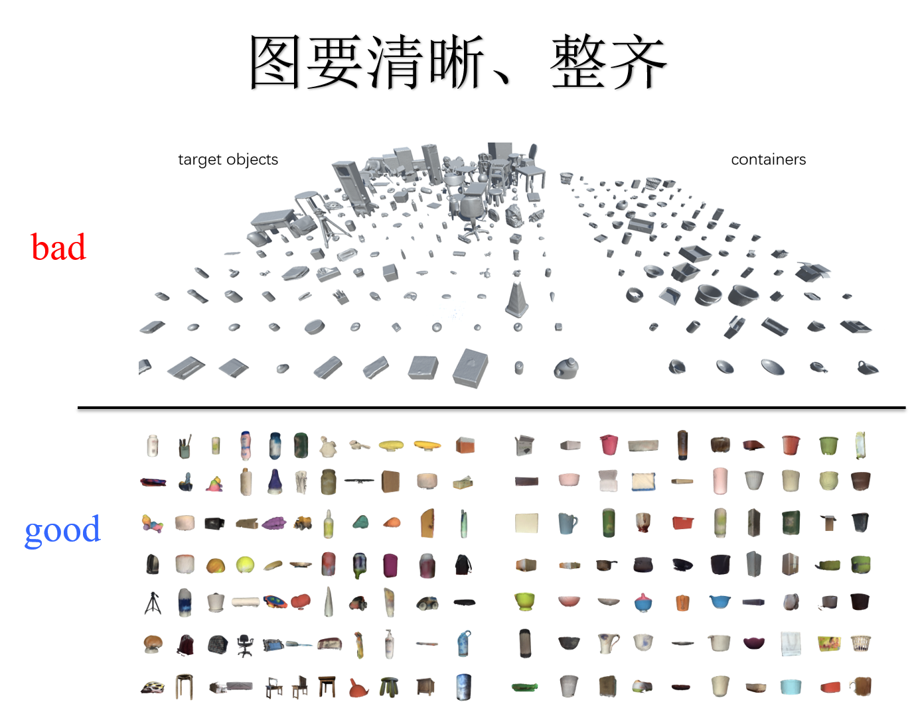
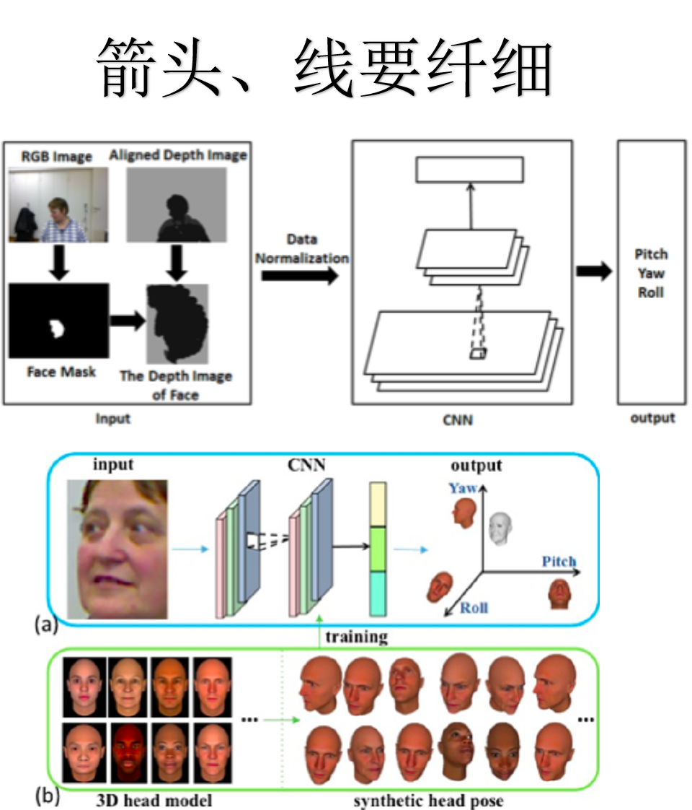
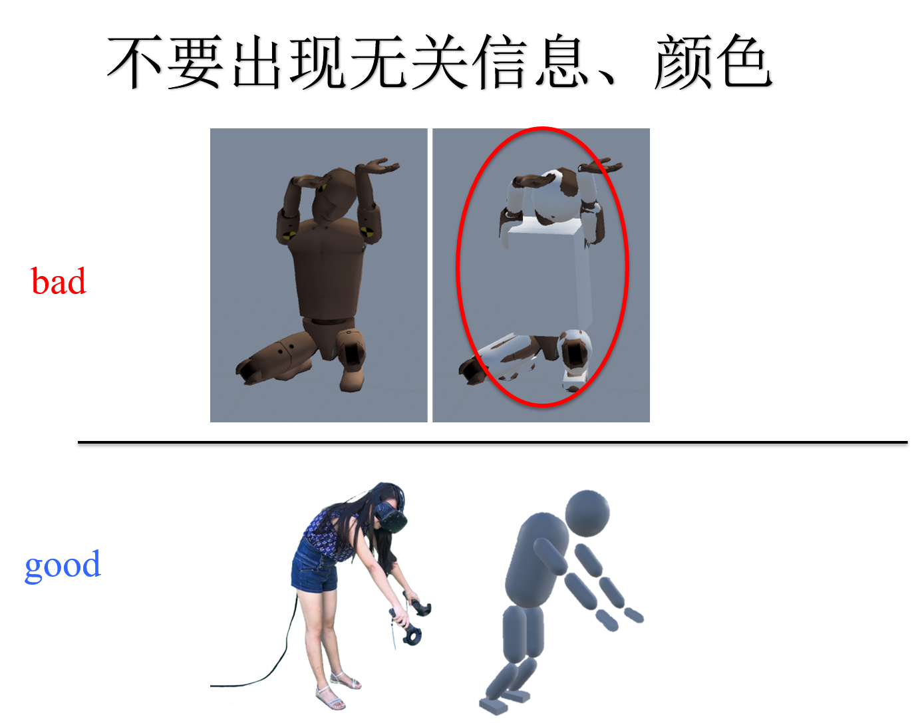
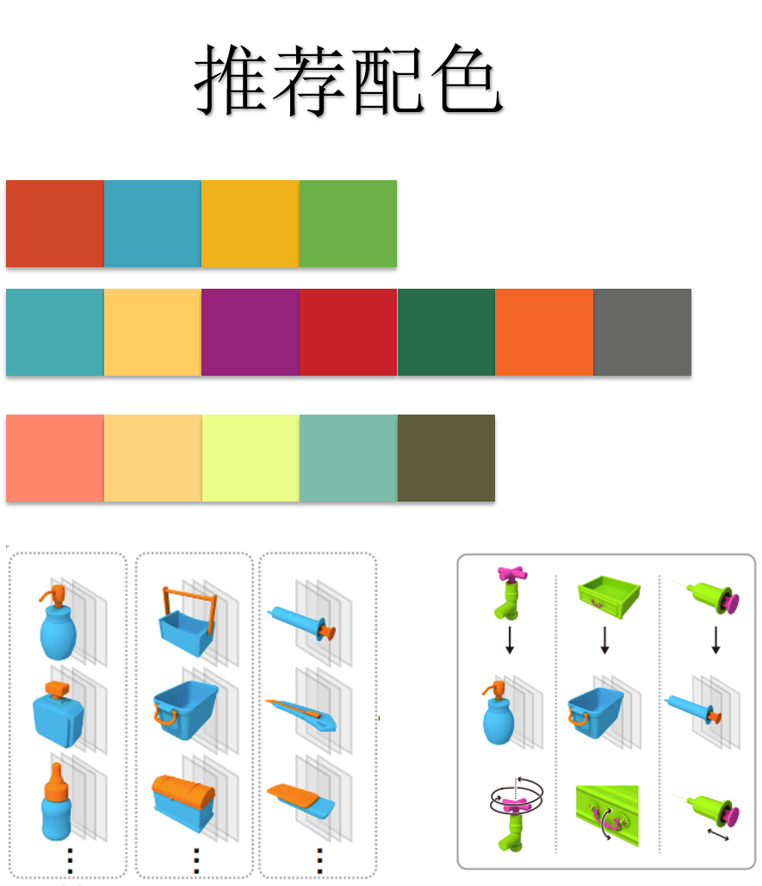

如何作图
从形式上说，图是一篇paper的门面，给reviewer的第一印象就是你的图，它决定了你整篇文章的美观程度和基础得分。
从内容上，我们论文中的图的目的就是让reviewer正文不读的前提下就可以了解你工作的目的和方法。以此为目标检查你的图是否达到了这一要求。
以下列出了部分作图细节：
图的布局要紧凑，不能有大片留白。
每篇论文的篇幅都是很紧凑的，图上的大幅留白会让reviewer观感很差。更关键的是，我们没有空间可以浪费。


对齐。
所有的图，总有一个对齐准则，但是没有参差不齐的！请检查你的图是否总有一边和别的图是对齐的。最差的是居中对齐。

图片的质量要高。
所有图要存成PNG格式。放在pdf中，如果放大300%的时候，也可以保持清晰，不能有模糊和锯齿。

字体
图中所有使用的字体为Myriad。
字号请自行调整。原则是图放到pdf中，字号应该与正文的字大小相同。
不要加粗！不要斜体！
大小适中、粗细适当（边框、箭头）
使用线、框以及箭头时，尽可能秀气。在能看清的基础上，线尽可能细，箭头尽可能小。

配色
绝对不要用高饱和度颜色。
PPT提供的默认配色很难看。所以不要用默认的配色。
具体配色方案可参考作图示例。

